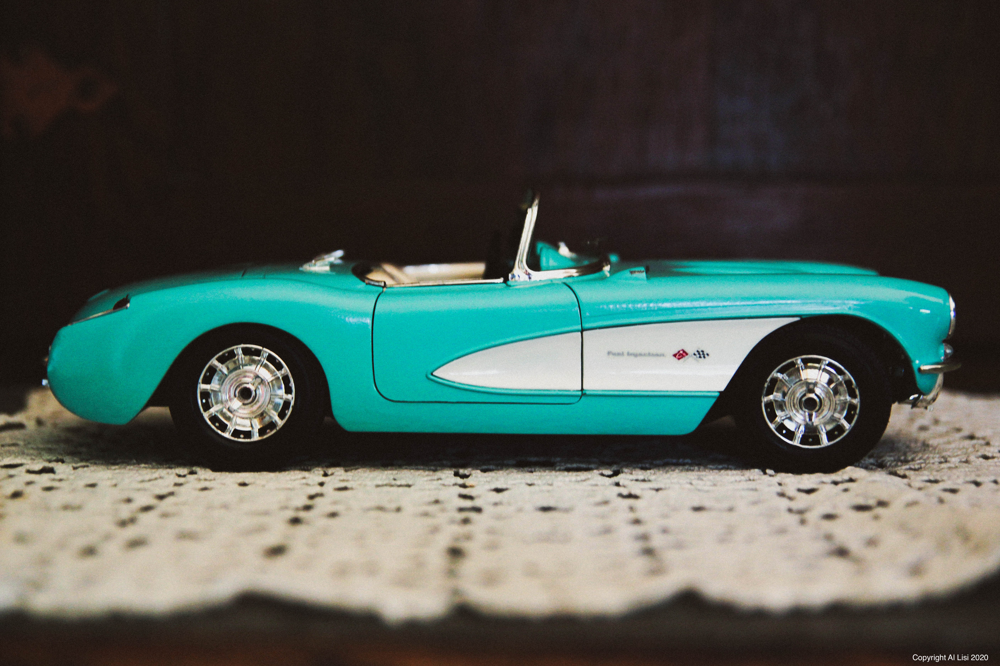

There’s nothing more inviting than the unlimited potential of a pure, raw, open road.
I've driven across the country four times. (Yeah, I love to drive.) I've seen the sun set over the Utah salt flats, rendering the landscape alien-like under an otherworldly purple-pink glow. I've seen a blizzard brew and unleash fury over the painted rocks of the Nevada desert from miles out. I've been stranded on a mountainside in the middle of the Wyoming wilderness in the dead of winter and dead of night. I've seen the South Dakota plains transformed into wetlands after days of rain. I've seen fog roll off the Montana hills so thick you'd think you could chew it.
I have a deep appreciation for our national parks. They are some of the few remaining places on Earth where light and shadow make love to reveal an ancient magic that is mostly long forgotten. I've spent extended time in Yellowstone, Yosemite, Redwoods and Badlands.
I am an Eagle Scout. Camping and hiking have been integral parts of my life since I was a kid. I've done a seven day whitewater canoe trek down the Allagash River. I've spent two weeks backpacking through Cimarron, New Mexico. I've hiked stretches of the Appalachian Trail and the Catskill Mountains. I've spent months under the canopies of the Shenandoah Valley forests. I'm at home under the stars and among the trees. I have a reverence for the communion man can make in nature. I like to leave my sites the way I find 'em.
I majored in English with a concentration in Writing and a minor in Film. I have a visual eye, can take pretty good photos, and can tell a compelling story, to boot.
I have eight years on-the-floor sales experience. I know how to communicate with - and relate to - people from all walks of life. I like making real connections with real people.
You might be asking: no Twitter? No Insta? No YouTube? No. I don't do any of that. I don't derive any pleasure or benefit from using those services. I recognize, however, that they can be immensely powerful platforms for companies, businesses and nonprofits, and would be happy to utilize them as just that - tools of the trade.
I love nature, I love beer, and I am awesome.
